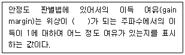
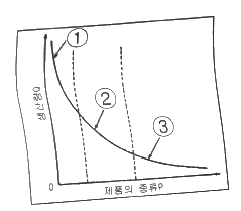
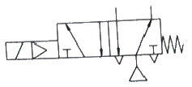
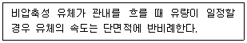

설비보전기사(구) (2020-09-26 기출문제)
1과목: 설비 진단 및 계측
1. 전동기의 진동과 소음에 관한 설명으로 틀린 것은?
- 전동기에서 발생하는 소음은 기계적 소음과 전자기적 소음이 있다.
- 전동기의 회전자에서 발생하는 기계적 진동주파수는 회전속도에 비례한다.
- 전동기의 회전자에서 질량 불평형이 발생하면 전원주파수의 2배 성분이 높다.
- 회전수와 전동기 회전자의 고유진동수가 일치할 때 큰 진폭의 진동이 발생한다.
(정답률: 69%)

2. 다음 안정도 판별법에 관한 설명에서 ( ) 안에 들어갈 알맞은 값은?

- 180°
- 360°
- -180°
- -360°
(정답률: 65%)
3. 진동현상을 설명하기 위해 사용하는 진동계의 기본요소가 아닌 것은?
- 감쇠
- 질량
- 고유진동수
- 스프링(강성)
(정답률: 58%)
4. 진동의 크기를 표현하는 방법으로 틀린 것은?
- 평균값 : 진동량을 평균한 값이다.
- 피크값 : 진동량의 절댓값의 최대값이다.
- 양진폭 : 정현파의 경우 피크값의 2배이다.
- 피크-피크 : 정측의 최대값에서 부측의 최대값까지의 값이다. 정현파의 경우 피크값의 1/2 이다.
(정답률: 68%)
5. 회전수를 측정하기 위한 방법이 아닌 것은?
- 초음파를 이용한 측정법
- 반사 테이프를 이용한 광학 측정법
- 자속 밀도의 변화를 이용한 전자식 측정법
- 회전주기를 측정하고 역수로 회전수를 구하는 측정법
(정답률: 70%)
6. 진동계의 강제진동에서 외력의 크기를 일정하게 하고 주파수를 변화시키면 계의 고유 진동수 부근에서 진동값이 급격히 극대치로 되는 현상은?
- 공진현상
- 강제 진동현상
- 정상 진동현상
- 회전체의 불평형 진동현상
(정답률: 72%)
7. 펌프 가동 중 진동과 소음이 심하여 진동분석을 하였다. 분석 결과 축 방향에서 높은 진동을 발견하였으며, 펌프의 회전주파수와 2f(3f)의 주파수가 탁월하였다. 펌프의 진동과 소음을 줄이는 방법으로 가장 적절한 것은?
- 오일 훨(oil whirl)현상을 해소한다.
- 모터와 펌프의 축정렬(alignment)을 실시한다.
- 모터의 동력이 약하므로 큰 동력의 모터로 교체한다.
- 펌프를 분해하고 임펠러의 불균형(unbalance)을 잡아준다.
(정답률: 74%)
8. 공장 내의 소음 중 특히 저주파 소음을 방지할 수 있는 방법은?
- 재료의 강성을 높인다.
- 재료의 무게를 늘인다.
- 재료의 무게를 줄인다.
- 재료의 내부 댐핑을 줄인다.
(정답률: 64%)
9. 음압의 단위로 옳은 것은?
- N
- kgf
- m/s2
- N/m2
(정답률: 78%)
10. 열 전달 및 전도에 관한 설명으로 틀린 것은?
- 열 전달량은 면적이 작을수록 높다.
- 열 전달량은 두께가 얇을수록 높다.
- 열 전달량은 온도차가 클수록 높다.
- 열 전도율은 금속이 기체보다 좋다.
(정답률: 63%)
11. 시간의 변화에 대한 진동 변위의 변화율을 나타내며, 기계시스템의 피로 및 노후화와 관련이 있는 것은?
- 변위
- 속도
- 가속도
- 주파수
(정답률: 52%)
12. 필터에 관한 설명이 옳은 것은?
- 대역소거필터(Band stop filter) : 설정된 주파수 대역을 제외한 신호만을 통과시키는 필터이다.
- 대역통과필터(Band pass filter) : 특정주파수 범위 이상의 고주파수 신호는 모두 통과시키는 필터이다.
- 고역통과필터(High pass filter) : 차단주파수보다 낮은 주파수의 신호 성분만을 통과시키는 필터이다.
- 저역통과필터(low pass filter) : 차단주파수보다 높은 주파수의 신호 성분만을 통과시키는 필터이다.
(정답률: 66%)
13. 펌프에서 캐비테이션이 발생하였을 때, 발생하는 주파수는?
- 고주파
- 저주파
- 중주파
- 초단파
(정답률: 72%)
14. 철길 주변의 주택가 소음을 평가하고자 할 때, 다음 중 기차의 소음은 어느 음원에 가장 가까운가?
- 면음운
- 선음원
- 점음원
- 입체음원
(정답률: 70%)
15. 소음계 사용에 관한 설명으로 틀린 것은?
- 소음의 주파수 분석에는 옥타브 분석기가 활용된다.
- 측정지점에 바람이 많으면, 바람마개(wind screen)를 부착한다.
- 충격성 소음의 경우 소음계의 동특성을 slow 상태로 놓고 측정한다.
- 측정 시 소음계에서 0.5m 이상 떨어져 측정자의 인체에서의 반사음을 고려하여야 한다.
(정답률: 66%)
16. 질량과 스프링으로 이루어진 1자유도계 진동시스템에서 스프링의 정적 처짐이 3mm인 경우, 이 시스템의 고유 진동 주파수[Hz]는? (단, g = 9.81 m/sec2 이다.)
- 2.78
- 3.27
- 9.10
- 57.18
(정답률: 57%)
17. 주파수(FFT) 분석기의 트리거(trigger) 기능으로 옳은 것은?
- 주파수분석 결과 중 진동 최대치만을 표시하는 기능이다.
- 수집한 전, 후의 신호를 중복 처리하여 정확도를 높이는 기능이다.
- 신호가 어떤 특정 값 이상으로 되었을 때 신호가 수집되는 기능이다.
- 관심 주파수의 분해능을 높여, 보다 정밀한 주파수를 보여주는 기능이다.
(정답률: 64%)
18. 신호변환기의 기능이 아닌 것은?
- 필터링
- 비 선형화
- 신호레벨 변환
- 신호형태 변환
(정답률: 66%)
19. 진동을 방지하기 위한 방진고무에 관한 설명으로 틀린 것은?
- 천연고무는 오일과 일광에 약하다.
- 부틸고무는 큰 진동 감쇠에 사용한다.
- 나이트릴 고무는 내수성을 필요로 할 때 사용한다.
- 네오프렌 고무는 내열성을 필요로 할 때 사용한다.
(정답률: 58%)
20. 트리거 신호를 이용하며, 대상 신호와 관계없는 불규칙 성분이나 다른 노이즈 성분을 제거하는 평균화 기법은?
- 선형 평균화
- 적분 평균화
- 동기 시간 평균화
- 피크 홀드 평균화
(정답률: 46%)
2과목: 설비관리
21. 만성로스에 관한 설명 중 가장 거리가 먼 것은?
- 만성로스는 잠재하므로 표면화하기 어려운 경향이 있다.
- 만성로스 개선을 위해서는 특징을 충분히 파악하는 것이 중요하다.
- 만성로스는 원인과 결과의 관계가 불명확하고 복합적 원인인 경우가 많다.
- 만성로스를 제로(zero)화하기 위해서는 관리도 분석기법의 활용이 가장 바람직하다.
(정답률: 64%)
22. 종합적 생산보전(TPM : Total Productive Maintenance)에 대한 설명 중 틀린 것은?
- TPM의 목표는 현장의 체질 개선에 있다.
- TPM의 목표는 설비, 사람, 현장이 변하지 않는 것이다.
- TPM의 특징은 고장 제로(zero), 불량 제로 달성 목표에 있다.
- TPM의 목표는 맨(man), 머신(machine), 시스템(system)을 극한 상태까지 높이는 데 있다.
(정답률: 68%)
23. 설비를 가동시켜야 하는 시간에 대한 실제 가동한 비율을 무엇이라고 하는가?
- 성능 가동률
- 부하 가동률
- 정미 가동률
- 시간 가동률
(정답률: 60%)
24. 치공구 관리의 기능 중 계획 단계에서 행해지는 것으로 가장 적합한 것은?
- 공구의 검사
- 공구의 연구시험
- 공구의 보관과 대출
- 공구의 제작 및 수리
(정답률: 56%)
25. 계측기 관리를 수행하기 위하여 준수해야 하는 사항과 거리가 가장 먼 것은?
- 관리규정
- 연구개발
- 선정·구입
- 검사·검정
(정답률: 73%)
26. 설비를 목적에 따라 생산설비, 유틸리티설비, 수송설비, 관리설비 등으로 분류하는 이유로 가장 거리가 먼 것은?
- 설비 원가 파악이 용이하다.
- 설비 투자를 합리적으로 할 수 있다.
- 생산 공정 능력을 파악하는데 편리하다.
- 예산 통제 및 고정자산 관리가 편리하다.
(정답률: 47%)
27. 사람, 물건, 설비의 관계를 가장 경제적으로 얻기 위해 제품을 구성하는 각 부품이나 재료의 입하부터 최종 출하까지의 생산설비를 계획하는 것과 가장 관계가 깊은 것은?
- 구조설계
- 안전설계
- 설비배치
- 운반 시스템 설계
(정답률: 66%)
28. 공사의 완급도에 따라 구분할 때 예비적으로 직장이 전표를 보관하고 있다가 한가할 때 착공하는 공사는?
- 계획공사
- 긴급공사
- 예비공사
- 준급공사
(정답률: 67%)
29. 설비의 경제성 평가 방법과 거리가 가장 먼 것은?
- 복책법
- MAPI 방식
- 비용 비교법
- 자본 회수법
(정답률: 66%)
30. 공장 설비관리에서 설비를 분류할 때 각종 기호법을 사용하게 된다. 다음 중 뜻이 있는 기호법의 대표적인 것으로서 기억이 편리하도록 항목의 첫 글자나 그 밖의 문자를 기호로 사용하는 것은?
- 기억식 기호법
- 순번식 기호법
- 세구분식 기호법
- 십진분류 기호법
(정답률: 77%)
31. 자주보전의 전개단계 중 발생원인·곤란개소 대책은 어느 단계인가?
- 제 1단계
- 제 2단계
- 제 3단계
- 제 4단계
(정답률: 67%)
32. 다음 상비품의 발주 방식 중 주문점에 해당하는 양만큼을 복수로 포장해 두고, 차츰 소비되어 다음 포장을 풀 때에 발주하는 방식은?
- 포장법
- 정수법
- 정량 유지 방식
- 정기 발주 방식
(정답률: 71%)
33. 열관리 영역에서 열에너지 흐름에 따른 분류에 해당하지 않는 것은?
- 배기 관리
- 연료의 관리
- 연소의 관리
- 열사용의 관리
(정답률: 64%)
34. 고장, 품목변경에 의한 작업준비, 금형교체, 예방보전 등의 시간을 뺀 실제 설비가 작동된 시간을 의미하는 것을 무엇이라 하는가?
- 조정시간
- 가동시간
- 휴지시간
- 캘린더시간
(정답률: 80%)
35. 설비배치의 형태에서 제품별 배치의 일반적인 특징으로 틀린 것은?
- 기계 대수가 적어지고 공구의 가동률이 향상된다.
- 작업자의 간접작업이 적어지므로 실질적 가동률이 향상된다.
- 공정이나 설비가 집중되고 운반이나 소요면적이 적어진다.
- 분업이 용이하고 작업을 단순화할 수 있으므로 전용 기계공구의 사용이 쉽다.
(정답률: 57%)
36. 보전업무에서 실제로 가장 중요한 요소의 하나로 현 설비뿐만 아니라 잠재적인 설비설계의 향상 또는 미래의 설비구매에 대한 의사결정을 위한 중요한 기반이 되는 설비관리기능은?
- 실시기능
- 지원기능
- 기술기능
- 일반관리기능
(정답률: 58%)
37. 다음 그림에서 '제품의 종류P ＞ 생산량Q' 일 때 해당하는 구역과 설비배치는?

- ①구역 : GT설비 배치
- ②구역 : 공정별 배치
- ③구역 : 제품별 배치
- ③구역 : 기능별 배치
(정답률: 63%)
38. 보전용 자재 관리에 대한 설명 중 옳은 것은?
- 불용자재의 발생 가능성이 적다.
- 자재구입의 품목, 수량, 시기의 계획을 수립하기가 용이하다.
- 보전용 자재는 연간 사용빈도가 높으며, 소비 속도도 빠른 것이 많다.
- 소모, 열화되어 폐기되는 것과 예비기 및 예비부품과 같이 순환 사용되는 것이 있다.
(정답률: 61%)
39. 현상파악에 사용되는 방법 중 공정에서 취한 계량치 데이터가 여러 개 있을 때 데이터가 어떤 값을 중심으로 어떤 모습으로 산포하고 있는가를 조사하는데 사용하는 것은?
- 관리도
- 체크시트
- 파레토도
- 히스토그램
(정답률: 75%)
40. 유용성(Availability)에 대한 설명으로 옳은 것은?
- 어느 특정 순간에 기능을 유지하고 있는 확률
- 대상물이 사용되어 처음 고장이 발생할 때까지의 평균시간
- 수리 가능한 체계나 설비가 고장 난 후 규정된 조건에서 수리될 때 규정시간 내에 수리가 완료될 확률
- 어떤 특정 환경과 운전 조건하에서 어느 주어진 시점 동안 명시된 특정 기능을 성공적으로 수행할 수 있는 확률
(정답률: 58%)
3과목: 기계일반 및 기계보전
41. 기어 감속기를 분류할 때 평행 축형 감속기에 속하는 것은?
- 웜 기어
- 스퍼 기어
- 하이포이드 기어
- 스파이럴 베벨 기어
(정답률: 55%)
42. 유압용 펌프에서 진동, 소음의 발생 원인으로 거리가 가장 먼 것은?
- 임펠러 파손
- 볼 베어링 손상
- 캐비테이션 발생
- 그리스 과다 주입
(정답률: 72%)
43. 일반적인 사후보전의 단점이 아닌 것은?
- 대형 설비 사고의 위험 가능성이 존재한다.
- 돌발일 경우 수리 시간이 예측이 어렵다.
- 보전요원의 기능 및 기술 향상이 어렵다.
- 제품 불량률이 낮고, 동일 고장의 반복적 발생 빈도가 낮다.
(정답률: 63%)
44. 녹에 의한 볼트너트의 고착을 방지하는 방법으로 틀린 것은?
- 유성 페인트를 나사부분에 칠한 후 죈다.
- 볼트너트를 죈 후 아주 높은 온도로 가열한 후 식힌다.
- 나사 틈새에 부식성 물질이 침입하지 않도록 한다.
- 산화 연분을 기계유로 반죽한 적색페인트를 나사부분에 칠한 후 죈다.
(정답률: 76%)
45. 구름 베어링의 구성 요소 중 회전체 사이에 적절한 간격을 유지하여 마찰을 감소시켜 주는 것은?
- 임펠러
- 마그넷
- 리테이너
- 블레이드
(정답률: 71%)
46. 오(O)링의 구비조건이 아닌 것은?
- 내 노화성이 좋을 것
- 상대 금속을 부식시킬 것
- 사용 온도의 범위가 넓을 것
- 내마모성을 포함한 기계적 성질이 좋을 것
(정답률: 79%)
47. 정반 위에 놓고 이동시키면서 공작물에 평행선을 긋거나 평행면의 검사용을 사용되는 금긋기 공구는?
- 펀치
- 매직잉크
- 디바이더
- 서피스 게이지
(정답률: 63%)
48. 농형 삼상 유도전동기가 과열되는 직접원인으로 거리가 먼 것은?
- 빈번한 기동을 하고 있다.
- 과부하 운전을 하고 있다.
- 배선용차단기가 작동하고 있다.
- 전원 3상 중 1상이 단락되어 있다.
(정답률: 71%)
49. 일반적인 직접측정의 특징과 거리가 가장 먼 것은?
- 기준 치수인 표준게이지가 필요하다.
- 측정 범위가 다른 측정 방법보다 넓다.
- 측정물의 실제치수를 직접 잴 수 있다.
- 양이 적고 종류가 많은 제품을 측정하기에 적합하다.
(정답률: 47%)
50. 일반적인 밸브에 관한 사항으로 옳은 것은?
- 밸브를 열고 닫을 때에는 최대한 빠르게 실시한다.
- 이종금속으로 제작된 밸브는 열팽창에 주의하여 사용한다.
- 밸브를 전개할 때는 핸들이 정지할 때까지 완전히 회전시킨다.
- 일반적인 수동밸브는 '좌회전 닫기', '우회전 열기'로 만들어져 있다.
(정답률: 57%)
51. 다음 선반에서 사용하는 척 중 4개의 조(jaw)가 각각 단독으로 이동하여 불규칙한 공작물의 고정에 적합한 것은?
- 단동척
- 연동척
- 콜릿척
- 벨척
(정답률: 65%)
52. 일반 열처리 중 풀림의 목적과 거리가 가장 먼 것은?
- 강을 연하게 한다.
- 내부 응력을 제거한다.
- 강의 인성을 증대시킨다.
- 냉간 가공성을 향상시킨다.
(정답률: 59%)
53. 기어 손상의 분류에서 이 부분이 파손되는 주요원인이 아닌 것은?
- 마모
- 균열
- 소손
- 피로 파손
(정답률: 66%)
54. 긴 관로나 유체기기의 가까이 설치하여 분해, 정비를 용이하게 할 수 있는 배관 이음쇠는?
- 니플(nipple)
- 엘보(elbow)
- 소켓(socket)
- 유니언(union)
(정답률: 74%)
55. 다음 브레이크 중 화물을 올릴 때는 제동작용을 하지 않고 화물을 내릴 때는 자중에 의한 제동 작용을 하는 것은?
- 원판 브레이크(disc brake)
- 밴드 브레이크(band brake)
- 블록 브레이크(block brake)
- 나사 브레이크(screw brake)
(정답률: 56%)
56. 일반적인 구름베어링의 기본 구성요소가 아닌 것은?
- 내륜
- 외륜
- 오일링
- 리테이너
(정답률: 60%)
57. 왕복식 압축기와 비교한 원심식 압축기의 단점으로 옳은 것은?
- 윤활이 어렵다.
- 설치 면적이 넓다.
- 맥동 압력이 있다.
- 고압발생이 어렵다.
(정답률: 64%)
58. 용접의 분류에서 압접에 속하는 것은?
- 스터드 용접
- 피복 아크 용접
- 유도 가열 용접
- 일렉트로 슬래그 용접
(정답률: 43%)
59. 공기의 유량과 압력을 이용한 장치 중 송풍기의 사용 압력을 올바르게 나타낸 것은?
- 0.1 kgf/cm2 이하
- 0.1 ~ 1 kgf/cm2
- 1 ~ 10 kgf/cm2
- 10 kgf/cm2 이상
(정답률: 67%)
60. 다음 압축기의 종류 중 용적형 압축기에 속하지 않는 것은?
- 축류식 압축기
- 왕복식 압축기
- 나사식 압축기
- 회전식 압축기
(정답률: 45%)
4과목: 윤활관리
61. 윤활 관리의 기본적인 4원칙에 포함되지 않는 것은?
- 적유
- 적법
- 적기
- 적압
(정답률: 66%)
62. 무단변속기에 사용되는 윤활유가 가져야 할 윤활조건 중 가장 거리가 먼 것은?
- 기포가 적을 것
- 내하중성이 클 것
- 점도지수가 낮을 것
- 산화안정성이 좋을 것
(정답률: 68%)
63. 다음 중 윤활관리 기술자의 직무와 거리가 가장 먼 것은?
- 윤활관계 작업원의 교육훈련
- 급유장치의 설치 및 유지관리
- 윤활관계의 사고와 문제점 검토
- 설비고장 원가분석과 윤활유의 제조기술
(정답률: 73%)
64. 그리스를 장기간 저장할 경우 또는 사용 중에 그리스를 구성하고 있는 기름이 분리되는 현상을 무엇이라고 하는가?
- 적점
- 주도
- 이유도
- 수세내수도
(정답률: 76%)
65. 고압고속의 베어링에 윤활유를 오일펌프로 공급하여 윤활을 하고, 배출된 오일은 다시 기름 탱크로 모이고 여과 냉각 후 다시 순환하는 급유방법은?
- 중력 순환 급유법
- 강제 순환 급유법
- 오일 순환식 급유법
- 가시부상유적 급유법
(정답률: 60%)
66. 압축기의 내부 윤활유의 요구 성능과 거리가 가장 먼 것은?
- 적정 점도
- 연질의 생성 탄소
- 드레인 트랩의 작동 상태
- 금속 표면에 대한 부착성
(정답률: 51%)
67. 중, 저속의 밀폐기어, 감속기 내의 베어링 하우징 등 윤할 개소의 일부가 오일 배스(Oil Bath)에 잠긴 상태로 윤활하는 방식의 급유법은?
- 나사 급유
- 비산 급유
- 유욕식 급유
- 사이펀 급유
(정답률: 74%)
68. 그리스 선정 시 고려해야 할 사항으로 가장 거리가 먼 것은?
- 그리스 제조법 및 급지 방법
- 증주제의 종류 및 베이스 오일의 점도
- 윤활개소의 운전조건인 회전수 및 하중
- 윤활개소의 운전 온도범위 및 물, 약품 등의 접촉유무와 관련된 환경
(정답률: 70%)
69. 윤활관리의 목적으로 잘못된 것은?
- 설비의 수명을 연장시킨다.
- 설비의 부식을 최대화시킨다.
- 설비의 유지비를 절감시킨다.
- 기계 설비의 가동률을 증대시킨다.
(정답률: 77%)
70. 윤활 기유에서 나프텐계와 비교하여 파라핀계의 특성으로 틀린 것은?
- 밀도가 높다.
- 휘발성이 낮다.
- 인화점이 높다.
- 잔류 탄소가 많다.
(정답률: 37%)
71. 스퍼기어, 헬리컬기어, 베벨기어 등 밀폐식 기어 장치의 급유법으로 가장 적합한 것은?
- 손급유
- 순환급유
- 적하급유
- 도포급유
(정답률: 62%)
72. EP유라고도 하며 큰 하중을 받는 베어링의 경우 유막이 파괴되기 쉬우므로 이를 방지하기 위해 사용되는 윤활유의 첨가제는?
- 극압제
- 청정분산제
- 산화방지제
- 점도지수향상제
(정답률: 65%)
73. 윤활유 중에 연료유나 다량의 수분이 혼입되었을 때 일어나는 현상으로 윤활성능을 저하 시키는 것은?
- 산화
- 탄화
- 동화
- 희석
(정답률: 64%)
74. 일반적인 그리스 윤활의 특징으로 옳지 않은 것은?
- 급유, 교환, 세정 등이 어렵다.
- 초기 회전 시 회전 저항이 크다.
- 유동성이 좋고, 온도 상승 제어가 쉽다.
- 흡착력이 강하므로 고하중에 잘 견딘다.
(정답률: 59%)
75. 미끄럼 베어링 급유법 중 적은 급유량으로 윤활이 가능하고 운전속도가 낮을 때 적용되는 방법은?
- 순환식
- 전손식
- 유욕식
- 분무식
(정답률: 50%)
76. 윤활유의 열화에 미치는 인자로서 거리가 가장 먼 것은?
- 산화(Oxidation)
- 동화(Assimilation)
- 탄화(Carbonization)
- 유화(Emulsification)
(정답률: 57%)
77. 그리스를 가열했을 때 반고체 상태의 그리스가 액체 상태로 되어 떨어지는 최초의 온도를 무엇이라 하는가?
- 적하점
- 유동점
- 발화점
- 산화점
(정답률: 69%)
78. 공압장치의 액추에이터 습동 부분에 윤활제를 공급하는 장치로 옳은 것은?
- 미니메스
- 오일스톤
- 에어브리더
- 루브리케이터
(정답률: 66%)
79. 원료에 따른 윤활유를 분류할 때 석유계 윤활유에 속하는 것은?
- 합성 윤활유
- 동물계 윤활유
- 식물계 윤활유
- 나프텐기 윤활유
(정답률: 60%)
80. 오일 분석법 중 채취한 시료유를 연소하여 그때 생긴 금속 성분 특유의 발광 또는 흡광현상을 분석하는 것은?
- SOAP법
- 페로그래피법
- 클리브랜드법
- 스폿테스트법
(정답률: 68%)
5과목: 공유압 및 자동화
81. 폐회로 제어계에서 설정 값과 피드백 변수의 비교 연산 결과 발생하는 값은?
- 외란
- 기준값
- 목표값
- 제어편차
(정답률: 64%)
82. 압력을 P, 면적을 A, 힘을 F로 나타낼 때, 관계식으로 옳은 것은?
- F = P × A
- F = P2 × A
- P = A/F
- A = P/F
(정답률: 68%)
83. 공기 냉각기(애프터 쿨러)에 관한 설명으로 틀린 것은?
- 공기 압축기 후단, 에어 드라이어 앞단에 설치한다.
- 공랭식은 냉각효과를 높이기 위해 방열판을 설치하며 수랭식에 비해 교환 열량이 크다.
- 압축기에서 나온 뜨거운 압축공기를 냉각함으로써 수중기의 약 60% 정도를 제거한다.
- 공랭식을 사용하면 냉각수를 사용하지 않아도 되므로 보수가 쉽고 유지비가 적게 든다.
(정답률: 52%)
84. 급속 배기 밸브의 사용 목적은?
- 실린더 피스톤을 보호한다.
- 실린더의 이동 속도를 느리게 하는데 사용한다.
- 실린더의 이동 속도를 빠르게 하는데 사용한다.
- 실린더의 피스톤이 원하는 위치에 정지시키고자 사용한다.
(정답률: 64%)
85. 다단 튜브형 로드를 갖고 있어서 긴 행정거리를 얻을 수 있는 실린더는?
- 격판 실린더
- 탠덤 실린더
- 양로드형 실린더
- 텔르스코프형 실린더
(정답률: 55%)
86. 유압 모터의 종류가 아닌 것은?
- 기어 모터
- 베인 모터
- 스크루 모터
- 피스톤 모터
(정답률: 48%)
87. 전기의 기본이 되는 전하량의 단위는?
- 줄[J]
- 볼트[V]
- 쿨롱[C]
- 암페어[A]
(정답률: 69%)
88. 유압의 특징으로 틀린 것은?
- 온도와 점도에 영향을 받지 않는다.
- 공기압에 비해 큰 힘을 낼 수 있다.
- 작동체의 속도를 무단 변속할 수 있다.
- 방청과 윤활이 자동적으로 이루어진다.
(정답률: 67%)
89. 다음 공기압 기호에 관한 설명으로 틀린 것은?

- 5포트 2위치 방향 제어 밸브이다.
- 플런저 조작 방식의 방향 제어 밸브이다.
- 조작력을 가하지 않은 초기 상태가 오른쪽이다.
- 절환 위치엗 따라 2개의 배기포트를 번갈아 사용한다.
(정답률: 54%)
90. 변압기에 관한 설명으로 틀린 것은?
- 변압기는 전압과 전류를 바꾸고 있지만 유도 저항에 비례한다.
- 정격 2차 전압에 권수비를 곱한 것을 정격 1차 전압이라 한다.
- 변압기는 전압과 전류를 바꾸고 있지만 전력으로서는 바뀌지 않는다.
- 입력에 대한 출력량의 비를 변압기 효율이라 하며, 출력이 클수록 효율이 좋다.
(정답률: 45%)
91. 다음 설명에 해당되는 법칙은?

- 렌츠의 법칙
- 보일의 법칙
- 샤를의 법칙
- 연속의 법칙
(정답률: 52%)
92. 시간과 관계없이 입력신호의 변화에 의해서만 제어가 행해지는 제어계는?
- 논리 제어계
- 동기 제어계
- 비동기 제어계
- 시퀀스 제어계
(정답률: 50%)
93. 압력을 축적하는 용기로 구조가 간단하고 용도도 광범위하여 유압장치에 많이 활용되는 것은?
- 냉각기
- 여과기
- 오일 탱크
- 어큐뮬레이터
(정답률: 71%)
94. 기계를 사용하여 특정 가공물을 핸들링하고자 할 때 기계적 제한사항이 아닌 것은?
- 모양
- 색상
- 재질
- 구조적 특성
(정답률: 75%)
95. 노즐 플래퍼형 서보 유압밸브에서 전기신호를 기계적 변위로 바꾸어 주는 역할을 하는 것은?
- 노즐
- 플래퍼
- 토크 모터
- 플래퍼 스프링
(정답률: 60%)
96. 실린더에 반지름 방향의 하중이 작용할 때 발생하는 현상으로 옳은 것은?
- 실린더의 추력이 증대된다.
- 피스톤 로드 베어링이 빨리 마모된다.
- 피스톤 컵 패킹의 내구수명이 증대된다.
- 실린더의 공기 공급포트에서 누설이 증대된다.
(정답률: 58%)
97. 용적형 유압 펌프가 아닌 것은?
- 나사 펌프
- 베인 펌프
- 벌류트 펌프
- 왕복동 펌프
(정답률: 53%)
98. 설비의 신뢰성을 나타내는 척도가 아닌 것은?
- 고장률
- 생산량
- 평균 고장 간격시간
- 평균 고장 수리시간
(정답률: 61%)
99. 유압시스템에서 사용되는 비례제어 밸브를 기능에 따라 나눌 때 해당되지 않는 것은?
- 방향제어밸브
- 시간제어밸브
- 압력제어밸브
- 유량제어밸브
(정답률: 62%)
100. 실린더에 인장하중이 걸리는 경우, 피스톤이 끌리게 되는데 이를 방지하기 위해 인장하중이 걸리는 측에 압력 릴리프 밸브를 이용하여 저항을 형성한다. 이러한 목적을 위해 사용되는 밸브는?
- 안전 밸브(sagety valve)
- 브레이크 밸브(brake valve)
- 시퀀스 밸브(sequence valve)
- 카운터 밸런스 밸브(counter balance valve)
(정답률: 61%)
전동기의 회전자에서 질량 불평형이 발생하면 회전자의 중심축 주변으로 회전하는 진동이 발생한다. 이러한 진동은 전원주파수의 2배 성분이 높아지는데, 이는 질량 불평형으로 인해 회전자의 한쪽 면이 더 무거워져서 발생하는 것이다. 따라서 이러한 진동과 소음을 줄이기 위해서는 회전자의 균형을 맞추는 것이 중요하다.